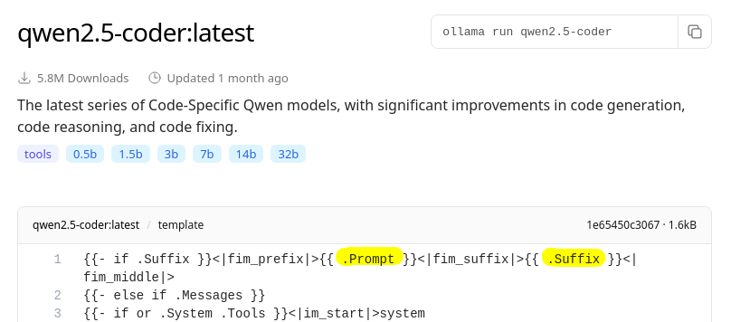

About the project
Eclipse AI Coder is an extension for the Eclipse IDE. It brings AI driven inline completion to the editor.
Features
- Use local running Ollama models
- Support for Codestral (by Mistral) large language model (bring your own key)
- Triggers completion automatically or by shortcut (Ctrl + Shift + Space)
- Controllable context. See how the prompt is build and control its content
- Insights about each request: Word count, durations, status
- Deep understanding of Java projects. Adds imports and variables in scope to the prompt
- Toggle between single and multiline completion
- Complete selected code
- Apply instructions on selected code
- Inline generate code by instructions
Installation
- Option A: Install from Eclipse Marketplace
- Option B: Install from updatesite:
- Option C: Download the JAR
Screenshots


Comparison with other solutions
| Eclipse AI Coder | Tabnine | GitHub Copilot | Copilot4Eclipse | Tabby | GitLab Duo | Amazon Q | |
|---|---|---|---|---|---|---|---|
| Inline Completion | ✅ | ✅ | ✅ | ✅ | ✅ | ✅ | ✅ |
| Eclipse Support | ✅ | ✅ | ✅ | ✅ | ✅ | ✅ | ✅ |
| Non-commercial | ✅ | ❌ | ❌ | ❌ | ❌ | ❌ | ❌ |
| Open Source | ✅ | ❌ | ❌ | ❌ | ✅ | ❌ | ❌ |
| Manual Trigger | ✅ | ❌ | ❌ | ✅ | ✅ | ❌ | ❌ |
| Bring your own key | ✅ | ❌ | ❌ | ❌ | ✅ | ❌ | ❌ |
| Local LLMs | ✅ | ❌ | ❌ | ❌ | ✅ | ❌ | ❌ |
| Toggle Multiline Completion | ✅ | ❌ | ❌ | ❌ | ❌ | ❌ | ❌ |
| Context Control | ✅ | ❌ | ❌ | ❌ | ❌ | ❌ | ❌ |
| Next Edit Suggestion | ❌ | ❌ | ❌ | ❌ | ❌ | ❌ | ❌ |
| LLM Providers | Local, Mistral |
Tabnine | Github Copilot | Github Copilot | Deepseek, Local, Mistral |
Gitlab | Amazon |
LLM Provider
Codestral
You require a (currently free) Codestral API key. You can get one here.

The Codestral API key can then be configured in the Eclipse preferences like in the following screenshot:

Ollama
You can also use Ollama to run a local LLM.
Here is an example how to run the Qwen2.5-Coder:
- Follow the installation instructions to install Ollama
- Run
ollama pull qwen2.5-coder:3b
to download the LLM - In Eclipse go to Window > Preferences > AI Coder > Provider
- Setup the Ollama base url
http://localhost:11434
and modelqwen2.5-coder:3b
in the preferences page
Models that are used in AI Coder must support additionaly to the prompt a suffix input. Here is an example: 
OpenAI compatible
You can use every llm provider that provide an OpenAI compatible API
As example for OpenRouter you can use the
https://openrouter.ai/apibase url
Be aware that many models from LLM provider like OpenAI does not work as Fill in the middle models.
Controls
| Shortcut | Selection | Action |
|---|---|---|
| Ctrl + Shift + Space | ❌ | Trigger inline completion at the position of the cursor |
| Ctrl + Shift + Space | ✅ | Trigger completion/correction of the selected code |
| Ctrl + Shift + 1 | ❌ | Trigger dialog to enter instruction to generate code at the position of the cursor |
| Ctrl + Shift + 1 | ✅ | Trigger dialog to enter instruction to edit the selected code |
| Ctrl + 3 | ❌ | Open quick access (which provides access to available instructions to generate code at the position of the cursor) |
| Ctrl + 3 | ✅ | Open quick access (which provides access to available instructions to edit the selected code) |
Settings
| Setting | Description |
|---|---|
| Enable Multiline Completion | If enabled inline completions that spans multiple lines will be recommended |
| Enable Autocomplete | If enabled inline completion will be triggered automatically (by typing or other changes). If disabled inline completion can only be triggered by configured shortcut. |
| Only on Change Autocomplete | If enabled autocomplete will only be triggered after a change in the file. As example after typing a letter. Other actions like moving the cursor will not trigger inline completion. |
| Ignore JRE Classes | Exclude JRE classes from context. These classes are typically already known by the LLMs. |
| Cleanup code on apply | When an code suggestion is applied then code cleanup actions (format...) are executed (for java) |
| Maximum Prefix Size (lines) | How many lines before the current cursor position should be included into the prompt |
| Maximum Suffix Size (lines) | How many lines after the current cursor position should be included into the prompt |
| Maximum Tokens | Limit the amount of tokens the used LLM should generate. |
| Debounce (in ms) | Autocompletion will wait this delay, and only if in this time no other trigger action is executed, execute the calculation of the inline completion. Only affects autocompletion. |
Contexts
This section describes the context informations that can be included into the prompt
| Context | Description | Filetype |
|---|---|---|
| Project informations | Name, location of the project. For java projects the java version is included. | All |
| File tree | Tree of the files in the current project | All |
| Dependencies | List of dependencies available in the current project (WIP) | All |
| Open editors | The content of the currently open editors | All |
| Super (Java) | The interface of the supertypes of the current java file | Java |
| Scope (Java) | The interface of the types in the current scope at the current cursor position | Java |
| Imports (Java) | The interface of the imported types in the current file | Java |
| Package (Java) | The interface of the types in the current package | Java |
| User | Custom contents provided by the user | All |
| Last edits | The sourcecode around the last edited locations | All |
| Clipboard | The content of the clipboard | All |
| Fill in middle | The current edit location and context lines around | All |
Release Notes
2025-08-xx
- Improved autocompletion trigger and debounce
- Add only on content change autocompletion
- Add token counts to history view
- Add preferences to controll available context types and their position in the prompt
- Add selection completion
- Add insert generation
- Add execute edit instructions
- Add MCP (prompts) support
- Add code cleanup on apply (Java)
- Codestral base url is no longer configurable
- Improved context performance (lazy calculations)
- Restructured preferences pages
- Open AI compatible apis support
- Completion now also working in multipage editors (as example pom.xml)
2025-07-15
- Add support for Ollama
2025-07-12
- Initial release
Feedback
Report any issues or feature requests on Github Issues
If you like the software please star the project on Github